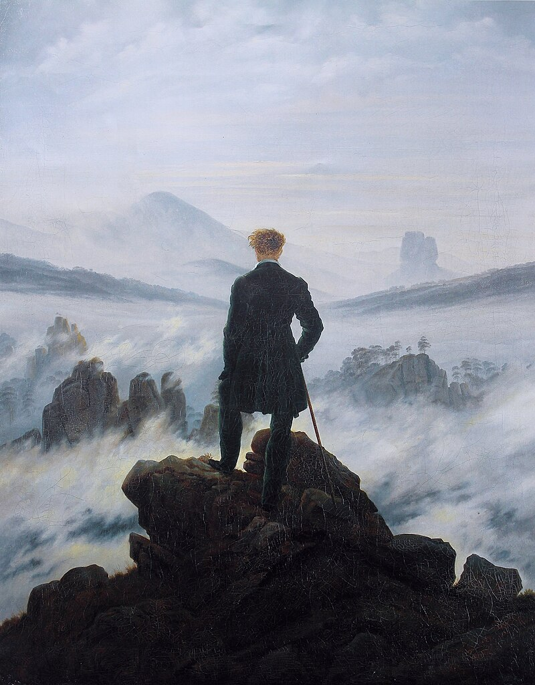
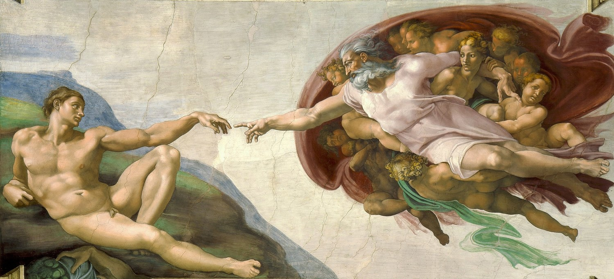
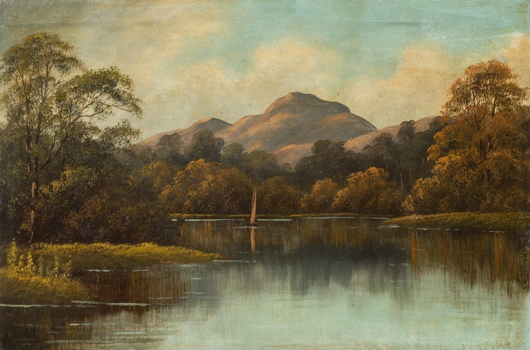
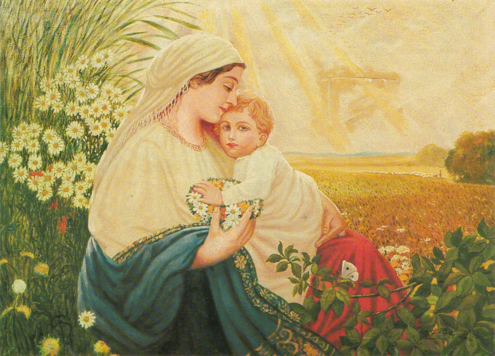
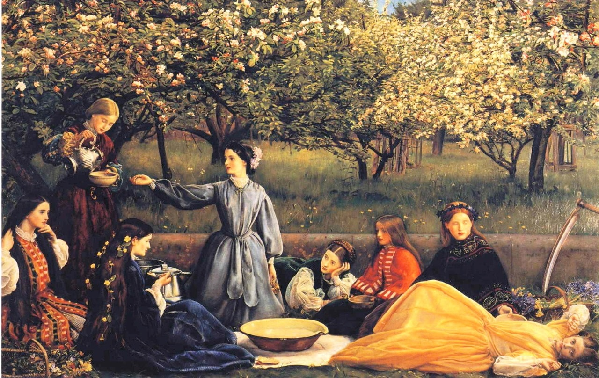
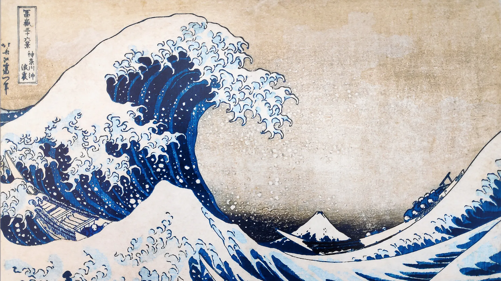

El caminante
Caspar David Friedrich | Pintura a Oli | 1818

Capilla Sixtina
Baccio Pontelli, Giovannino de Dolci | 1473

Continental
Horace W. Gilbert | Pintura a Oli | 1895

La Maria
Adolf Nitler | Pintura a Oli | 1913

Primavera
John Everett Millais | Pintura a Oli | 1856

La Gran Onada de Kanawada
Katsushika Hokusai | Gravat | 1830